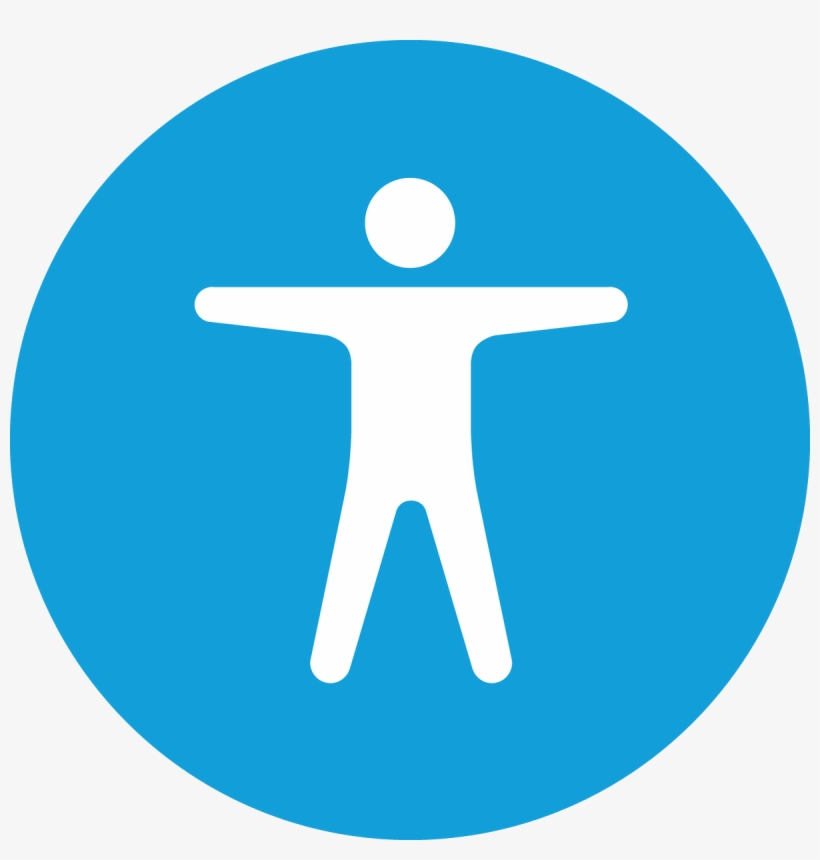

Web Accessibility
I would like to build inclusive web applications that work for everyone. Accessibility is a core part of ethical development and ensures that users with disabilities can fully engage with digital products.
I would like to build inclusive web applications that work for everyone. Accessibility is a core part of ethical development and ensures that users with disabilities can fully engage with digital products.

While I enjoy doing both the front end and back end of a project, I especially like crafting intuitive user interfaces using HTML, CSS, and JavaScript. I am particularly interested in creating clean, responsive designs and writing semantic code that enhances both accessibility and SEO.